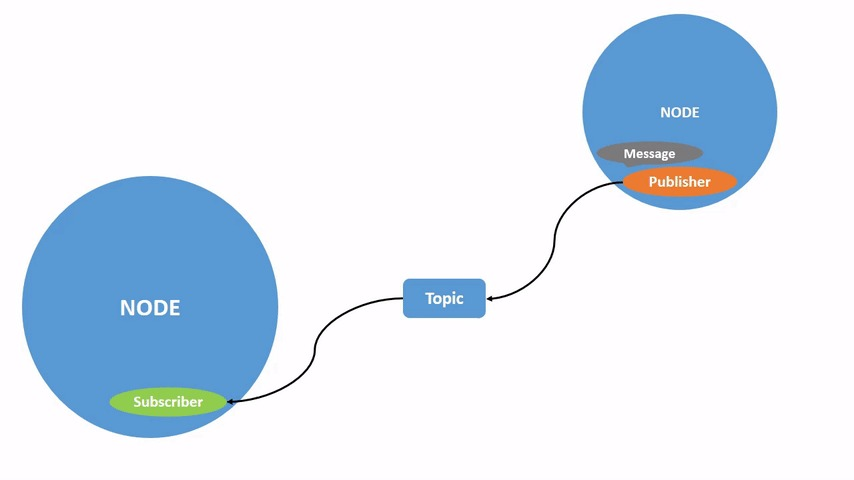
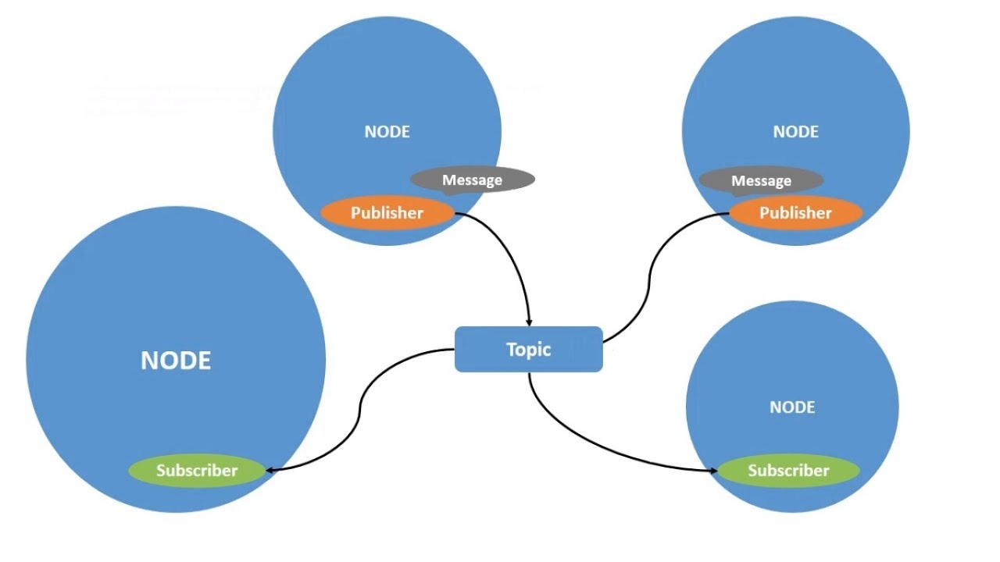
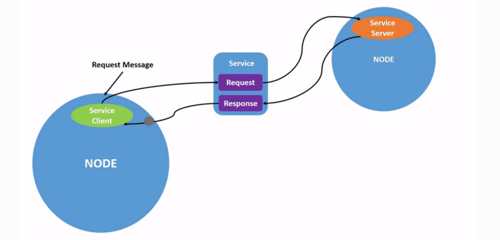
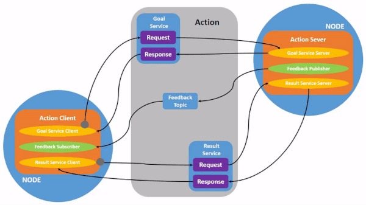

ROS 2 Command Line
In ROS 2, the command line isn't just a tool — it's a control panel for your robotic universe. Whether you're managing nodes, inspecting topics, tuning parameters, or debugging, the CLI is where theory meets hands-on execution.
Meet Your Entry Point: ros2
The ros2 command is your gateway to interacting with the ROS 2 framework. It's clean, modular, and remarkably powerful — giving you direct access to your system without writing a single line of code.
Syntax Decoded:
ros2 [command] [verb] <arguments>- ros2: The core command that boots up the CLI
- [command]: The domain — such as node, topic, or service
- [verb]: The operation — like list, info, call
- <arguments>: Optional flags or data that shape the behavior
Turtlesim
Turtlesim is a lightweight 2D simulator that simulates a turtle moving around on the screen. Think of it as a digital pet turtle you can control using ROS 2 commands. It might seem like a toy, but it helps you understand topics, services, and actions — the core communication mechanisms in ROS 2.
It's like the "Hello, World!" of ROS.
Why Use Turtlesim?
- Easy to start with — no need for complex hardware
- Visual and interactive — you can see the effects of your code immediately
Concepts You'll Practice
- ROS 2 nodes and how they run
- ROS 2 topics — like a radio channel for data
- ROS 2 services — like a question/answer system
- ROS 2 packages and how to structure your own
Install Turtlesim Package
sudo apt update
sudo apt install ros-humble-turtlesimROS2 bag command with Turtlesim
ros2 bag lets you record and replay ROS 2 topic data. With turtlesim, this means you can save a turtle's movement and play it back exactly as it happened — great for testing or demos.
1. Record Turtlesim Movements
First, launch turtlesim and start controlling the turtle:
ros2 run turtlesim turtlesim_node
ros2 run turtlesim turtle_teleop_keyThen, record the movement commands:
ros2 bag record -o turtle_bag /turtle1/cmd_velThis saves the velocity commands (from your keyboard) into a bag file called turtle_bag.
2. Replay the Recorded Movements
To replay the saved motion:
ros2 bag play turtle_bagThe turtle will move on its own, repeating the path from your recording — no need to control it manually again.
ROS 2 Nodes - Basic Commands
A node in ROS 2 is the smallest unit of a distributed computing system. Each node is responsible for a specific task, such as controlling a robot component, processing sensor data, or facilitating communication.
Running a ROS 2 Node
ros2 run <package_name> <executable_name>This command runs a node executable from a given ROS 2 package.
Listing Active Nodes
ros2 node listDisplays all currently running nodes in the ROS 2 system.
Getting Information About a Node
ros2 node info /<node_name>Retrieves detailed information about a node, including the topics it publishes or subscribes to, services it provides, and actions it handles.
ROS 2 Topics - Basic Commands
Topic-Based Communication
This is ROS 2's version of public radio. You have publishers (those doing the talking) and subscribers (those listening in). It's asynchronous—no one's waiting around for a reply, which means everyone stays productive and slightly anti-social.
Why Topics Work:
- Supports one-to-many and many-to-many data sharing
- Great for real-time data like sensor streams
- Uses Quality of Service (QoS) to balance reliability and speed
When to Use Topics:
- Streaming IMU or LiDAR data
- Broadcasting robot health (because someone has to care)
- Publishing environment updates for autonomous navigation
Think of topics as live updates. If your robot's camera sees something new every second, you don't want to send a formal letter—you want a megaphone.
Listing Available Topics
ros2 topic listDisplays all currently active topics in the ROS 2 system.
Displaying Messages Published on a Topic
ros2 topic echo /<topic_name>Continuously outputs messages being published to a specified topic.
Retrieving Topic Information
ros2 topic info /<topic_name>Displays metadata about a topic, such as message type and publisher/subscriber counts.
Inspecting the Message Type of a Topic
ros2 interface show <message_type>Displays the structure of a message type used in communication.
Publishing a Message to a Topic
ros2 topic pub /<topic_name> <message_type> "{data}"Manually publishes a message to a topic, useful for testing.
Checking the Publishing Rate of a Topic
ros2 topic hz /<topic_name>Displays the frequency at which messages are being published to a topic.
ROS 2 Services - Basic Commands
Service-Based Communication
This is your polite, structured conversation model. One node asks for something, and the other responds. Services are synchronous, meaning the client waits for the server to answer. Very civilized.
Why Use Services:
- Clean request-response interactions
- Predictable outcomes—perfect for decision-making logic
- Supports multiple clients asking the same server for help
When Services Make Sense:
- Asking a robot for its current location
- Requesting a diagnostic checkup
- Telling a node to reset its internal state (because it's being dramatic again)
Services are best when you need clarity, closure, and no room for miscommunication.
Listing Available Services
ros2 service listLists all active services currently available in the system.
Retrieving the Type of a Service
ros2 service type /<service_name>Displays the type of message structure used by a service.
Calling a Service
ros2 service call /<service_name> <service_type> "{request_parameters}"Sends a request to a service and waits for a response.
Example:
ros2 service call /spawn turtlesim/srv/Spawn "{x: 5.5, y: 5.5, theta: 1.57, name: 'turtle2'}"Effect: Spawns a new turtle at the specified position.
ROS 2 Actions - Basic Commands
Action-Based Communication
Some tasks take time. You can't just send a command and expect magic. That's where actions come in. They let you send a goal, receive feedback, and eventually get a result. It's the long-distance relationship of ROS 2 communication.
Why Actions Are Awesome:
- Supports long-running tasks with feedback
- Clients can cancel or modify goals on the fly
- Keeps the client informed with periodic updates
Perfect For:
- Moving a robotic arm through a complex sequence
- Having a mobile robot follow a planned route
- Running SLAM
Actions give you the best of both worlds—structure like services, with the flexibility of topics.
Listing All Available Actions
ros2 action listLists all active action servers.
Sending a Goal to an Action Server
ros2 action send_goal /<action_name> <action_type> "{goal_parameters}"Sends a goal request to an action server, initiating a task.
Effect: Instructs the robot to navigate to a specified pose.
ROS 2 Parameters - Basic Commands
Parameters allow nodes to be configured dynamically without changing the source code.
Listing All Parameters of a Node
ros2 param list /<node_name>Lists all parameters associated with the specified node.
Getting the Value of a Parameter
ros2 param get /<node_name> <parameter_name>Retrieves the current value of a parameter.
Setting a Parameter Value
ros2 param set /<node_name> <parameter_name> <value>Sets a new value for a parameter on a running node.
Effect: Changes the red background color to maximum.
Dumping Parameters to a File
ros2 param dump /<node_name> --output-dir <directory_path>Saves current parameters to a YAML file for future use.
Loading Parameters from a File
ros2 param load /<node_name> <file_path>Loads parameters from a YAML file into a running node.
Effect: Applies saved configuration settings to the node.
ROS 2 Daemon Command
ros2 daemon refers to a background system service that is responsible for managing node discovery and updating the ROS 2 computation graph. This daemon ensures that the ros2 CLI commands (like ros2 node list, ros2 topic list) can accurately reflect the current state of the ROS 2 system.
In simpler terms, it keeps track of which nodes, topics, services, and actions exist in the system at any given time.
ros2 daemon start
ros2 daemon startStarts the ROS 2 daemon if it's not already running.
ros2 daemon stop
ros2 daemon stopTo stop the daemon manually. Normally, this is not required during regular usage but can be useful when troubleshooting or resetting the ROS graph state.
ros2 daemon status
ros2 daemon statusChecks the current status of the daemon—whether it is running or stopped.
ROS 2 Doctor Command
ros2 doctor is a diagnostic command-line tool in ROS 2 used to check the health of a ROS 2 installation and its runtime environment. It is especially helpful for troubleshooting system issues, verifying correct setup, and identifying missing or misconfigured components.
ros2 doctor
ros2 doctorRuns a basic diagnostic check and outputs a summary of the system's ROS 2 setup and status.
This provides quick feedback on essential components such as:
- Environment variables
- RMW (ROS Middleware) implementation
- DDS communication setup
- Python and ROS 2 package paths
ros2 doctor --report
ros2 doctor --reportGenerates a detailed diagnostic report, including all checks and results in a readable format. Useful for deeper analysis or when preparing logs for sharing with instructors or debugging teams.
ros2 doctor --include-warnings
ros2 doctor --include-warningsIncludes non-critical warnings in the diagnostic output. This is useful for identifying potential configuration improvements or early signs of misalignment in the setup.
ROS 2 Interface Command
The ros2 interface command group provides tools to view and explore definitions of ROS 2 messages, services, and actions. These definitions are the building blocks for communication between nodes in a ROS 2 system.
1. ros2 interface list
ros2 interface listLists all message, service, and action types available in the current ROS 2 environment.
2. ros2 interface packages
ros2 interface packagesShows all packages that define interfaces (messages, services, or actions).
3. ros2 interface package
ros2 interface package <package_name>Lists all interfaces (msg/srv/action) provided by a specific package.
4. ros2 interface show
ros2 interface show <interface_name>Displays the contents of a specific interface, showing its fields, types, and structure.
ROS 2 Component Command
ros2 component is a command-line interface in ROS 2 used to work with composable nodes. These are modular software components that can be dynamically loaded into a container node at runtime, instead of being launched as separate processes. This supports better resource efficiency and faster inter-node communication through shared memory.
Composable nodes are especially useful in systems where performance, modularity, or dynamic loading/unloading is required.
ros2 component list
ros2 component listDisplays all the currently loaded components in the active container nodes.
ros2 component types
ros2 component typesShows all available component types on the system. These types are the loadable plugins registered by different ROS 2 packages.
This is useful when you want to know what components are available to be loaded dynamically.
ros2 component load
ros2 component load <container> <package_name> <plugin_name>Loads a component into a specified container node.
ros2 component standalone
ros2 component standalone <package_name> <plugin_name>Runs a component in its own process (outside of a container). This is primarily for testing or debugging a single component.
ros2 component unload
ros2 component unload <container> <node_name>Unloads a component that was previously loaded into a container node.
ROS 2 Launch Command
The ros2 launch command is used to launch multiple nodes and set parameters using a launch file. It is the primary tool for managing coordinated startup of a robotic system in ROS 2.
1. ros2 launch
ros2 launch <package_name> <launch_file>Launches the specified launch file from a given package. This is the most common way to start an application consisting of multiple nodes.
2. ros2 launch --show-arguments
ros2 launch <package_name> <launch_file> --show-argumentsDisplays the list of configurable arguments defined in the launch file, helping users understand what parameters can be set at runtime.
3. ros2 launch --print-description
ros2 launch <package_name> <launch_file> --print-descriptionPrints the entire XML or Python launch file structure as interpreted by ROS 2. Useful for debugging or understanding what the launch file is doing internally.
Colcon Build Tools
Colcon is the recommended command-line tool for building, testing, and managing packages in ROS 2 workspaces. It replaces catkin and ament tools from ROS 1 and earlier ROS 2 versions.
1. colcon build
colcon buildBuilds all packages in the current workspace.
2. colcon build --packages-select
colcon build --packages-select <package_name>Builds only the specified package.
3. colcon build --symlink-install
colcon build --symlink-installBuilds using symbolic links to the source files instead of copying them—useful during development.
4. colcon test
colcon testRuns tests for all packages in the workspace.
5. colcon test-result
colcon test-resultDisplays test results after running colcon test.
6. colcon list
colcon listLists all packages in the current workspace.
rosdep
rosdep install --from-paths src --ignore-src -r -yAutomatically installs all dependencies required by the packages inside a ROS 2 workspace. It scans the package.xml files to determine the missing dependencies and installs them.
Installing Specific ROS 2 Packages
Apart from installing workspace dependencies, individual ROS 2 packages can be installed from online repositories.
Installing a ROS 2 Package Using apt (Ubuntu-based Systems):
sudo apt install ros-humble-<package_name>Installs all missing dependencies required by the packages in the src/ directory of the workspace.
RQT
What is rqt_graph?
rqt_graph is a graphical tool in ROS 2 that lets you see how different nodes, topics, and message flows are connected in your robot system.
In Simple Terms: Imagine your robot's software is like a social network. Nodes are the people, and topics are the group chats. rqt_graph shows who is talking to whom and through which "channel" (topic).
Why Use rqt_graph?
- To visualize node communication in real-time
- To debug — see if data is flowing as expected
- To learn how ROS 2 components interact (especially in larger projects)
Install rqt
sudo apt update
sudo apt install '~nros-humble-rqt*'To run rqt:
rqtWhen running rqt for the first time, the window will be blank. No worries; just select Plugins > Services > Service Caller from the menu bar at the top.
ROS 2 Control Command
ros2 control is part of the ROS 2 Control framework. It provides a command-line interface for interfacing with robot hardware and managing controllers (such as joint controllers, velocity controllers, etc.).
This tool allows educators and students to load, activate, deactivate, and inspect controllers running on a robot or in simulation. It is central to managing hardware abstraction and enabling motion control in a modular and real-time friendly manner.
ros2 control list_controller_types
ros2 control list_controller_typesLists all controller types available on the system that can be loaded.
ros2 control list_controllers
ros2 control list_controllersShows the currently loaded controllers, along with their status:
- active - controller is loaded and running
- inactive - controller is loaded but not running
- unconfigured - controller is defined but not yet configured
ros2 control list_hardware_interfaces
ros2 control list_hardware_interfacesDisplays the hardware interfaces available for control. These typically include:
- Command interfaces (e.g., position, velocity, effort)
- State interfaces (e.g., joint positions, velocities)
Client Libraries in ROS 2
ROS 2 communicates in several programming languages via client libraries, allowing developers to pick the appropriate tool for the task.
Overview of Client Libraries
Client libraries are your doorway to ROS 2 concepts such as nodes, topics, and services — in your preferred language. If you're rapid prototyping or optimizing for performance, there's a library available.
Core Client Libraries
- rclcpp (C++): Designed for control and speed, best when performance truly matters
- rclpy (Python): Fast, straightforward, and just right for scripting and rapid prototyping
Community-Maintained Client Libraries
In addition to the core libraries, the ROS 2 community provides more:
- Java: Android and JVM-based projects
- C: Lightweight, perfect for use on resource-scarce systems
- C#: Perfect for.NET and Windows development
- Node.js: Just right for web and JavaScript developers
- Rust: For developers who love concurrency and safety
Note: ROS 2 does not merely program but follows your programming style.
File System in ROS 2
If ROS 2 is the brain of your robot, its file system is the nervous system — everything flows through here. Understanding it means you know where everything lives and how it all connects.
Workspaces
A workspace is your robot's personal playground — a folder that holds all your packages. The gold-standard layout looks like this:
ros2_ws/ ├── src/ # Your actual code lives here ├── build/ # Temporary build files ├── install/ # Final output (binaries, libs, etc.) └── log/ # Build and runtime logs
Package Structure
In ROS 2, packages are the basic building blocks — like Lego bricks for robots. A package can hold:
- Nodes that do the actual work
- Libraries to share useful code
- Configs for fine-tuning behavior
- Interfaces (msg/srv) for communication
- Launch files to kick things off
A typical package looks like this:
my_robot_package/ ├── package.xml # Package metadata ├── CMakeLists.txt # Build instructions ├── src/ # Source code (e.g., .cpp files) ├── include/ # Header files ├── launch/ # Launch scripts ├── config/ # YAML config files ├── msg/ # Custom messages └── srv/ # Custom services
Getting Started
mkdir -p ~/ros2_ws/src
cd ~/ros2_ws
colcon build
source install/setup.bashThat's it! Now your packages are active and ready for action.
Before doing anything ROS-y, make sure you source the setup file:
source /opt/ros/humble/setup.bashAdditional Resources
For more detailed examples and explanations, check out these official ROS2 documentation pages: